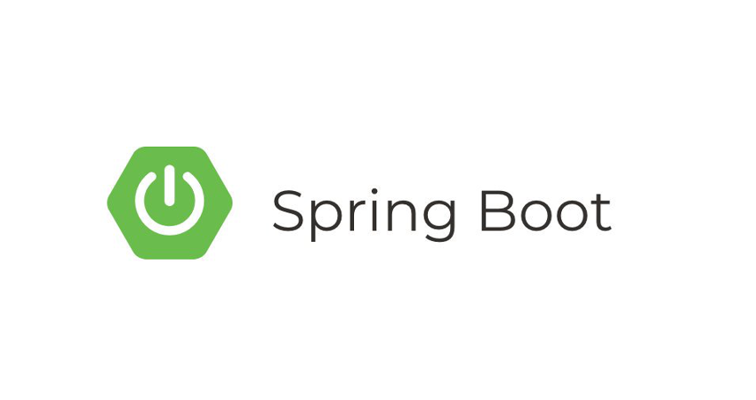
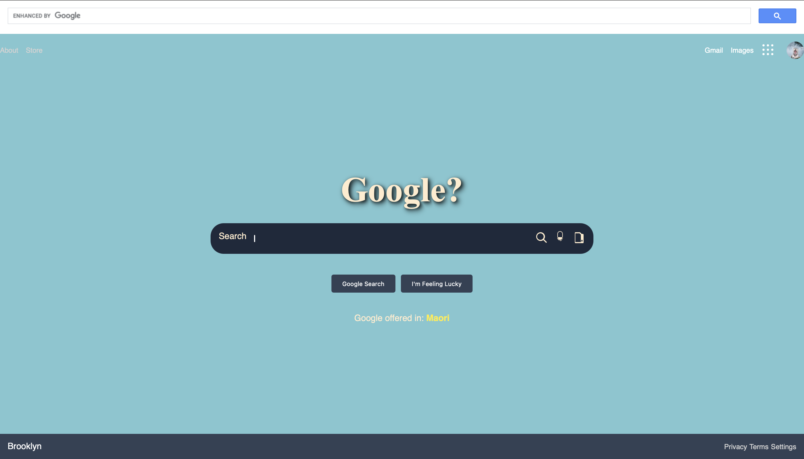
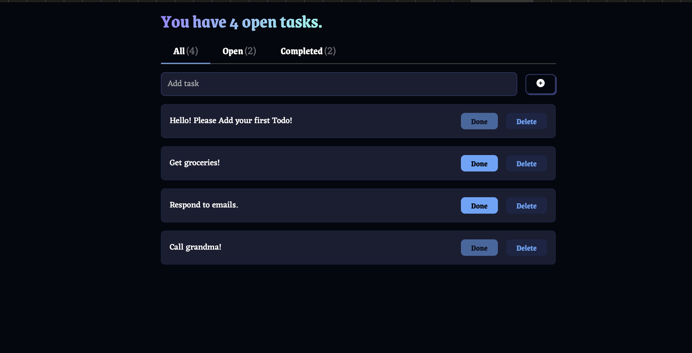
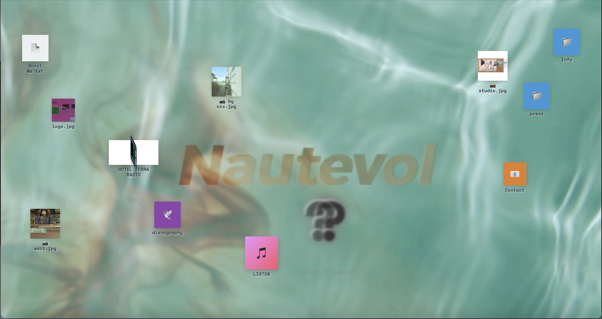
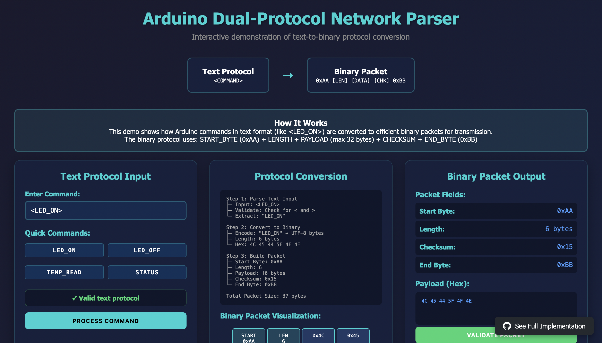

I am a self-taught painter and audio-engineer, but these days, I spend most of my time coding. My journey into software development stems from a fascination with bridging technology and fine art while preserving artistic authenticity. The problem-solving skills I've developed through years of creative work give me a unique perspective in tackling complex challenges. I look forward to working and evolving in the field of tech because technology is constantly changing; and like change, growth is also constant.
About
Experience
09/2024 - 02/2025
Full Stack Developer · codeDifferently
During my time at codeDifferently I learned how to build real world applications using an accelerated SCRUM methodology. I've built three results driven applications, one being my portfolio site which is currently averaging 50 visits a week. I've also contributed to the following projects; CSV parsers, bank ATM features, simple grade checkers, an interactive game called numMeCrazy and much more.
01/2025 - 03/2025
Junior IT Analyst Intern · WC3
As an IT analyst intern, I've worked with the IT departments (WC3 clients) to provide basic technical support and system monitoring while learning about enterprise operations. Daily tasks include tracking and documenting IT issues, performing routine system checks, and helping prepare technical documentation under senior staff supervision.
2022 - 2024
Audio Engineer · FreeLance
I stumbled into the audio sector because the opportunity presented itself, and I picked up the trade pretty quickly. I began my audio journey as a studio intern at Manhattan Beach Recordings. After a six-month tenure there, I began to work independently, mainly in live sound at several local bars in the Brooklyn area. In addition to live sound work, I ran a plethora of vocal tracking, mixing, and song-writing sessions for various artists; most notably, Wale, DreamDoll, Playboi Carti, Jada Kingdom, and Skepta.
2022 (4 months)
Jeweler/Stone-Setting Apprentice · Riva Precision
As an entry-level jeweler/setter at Riva, I had to learn to read blueprints and implement them into actual pieces. I was able to employ and further improve upon my quick problem-solving skills due to the tedious, hurried nature of the work. While at Riva, I produced over 350 pieces for production (retail). Working as a jeweler in a factory was extremely challenging; due to the fast working pace and high-quality standard, but it's where I discovered my love for problem-solving.
Current Projects
Building meaningful projects is how I translate my ideas into reality. Each project represents a problem I found worth solving or a question I wanted to explore. While I have many interests, these featured projects showcase my current focus on creating practical tools that help people learn, work, and research more effectively.

Petal & Pastry Bakery Site
A responsive static landing page for a local bakery business that enables online ordering through an integrated form system. The site features custom CSS animations, mobile-first design principles, and an intuitive user interface for browsing bakery products and placing orders.


Google Clone
A responsive Google Search clone that faithfully recreates the iconic search interface while implementing modern web development practices and real search functionality using Google's Custom Search API.


Interactive Artist Portfolio - Desktop UI
A creative, desktop-themed portfolio website for multimedia artist Nautevol featuring an innovative user interface that mimics a computer desktop environment. Built with vanilla HTML, CSS, and JavaScript, the site showcases interactive elements including draggable icons, modal windows, audio players, and image galleries. The project demonstrates advanced CSS animations, responsive design principles, and creative UX/UI implementation. Key features include a 3D animated radio component, terminal-style text displays, and seamless audio integration for music samples. The site serves as both a functional portfolio and an artistic statement, blending technical proficiency with creative expression.

Arduino Dual-Protocol Network Parser
A C-based network protocol parser that bridges human-readable commands with efficient binary packet transmission for Arduino/embedded systems communication. The system accepts text-based commands in `